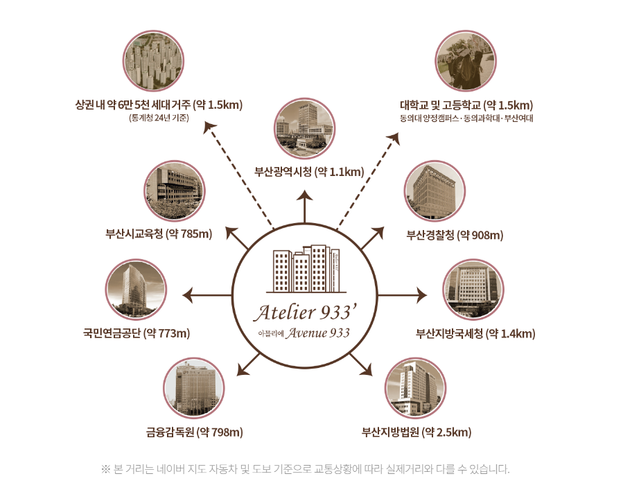

양정 생활권 주거 배후수요
YANGJEONG COMMERCIAL · BUSANJINGU
01약 6만5천 세대 02약 5만3천 03양정역 동선 04상가매물 비교
부산진구 양정 상가, 배후수요와 동선을 함께 보는 이유
주거·업무·행정수요가 실제 고객 이동으로 어떻게 이어지는지, 양정 상가를 볼 때 확인할 핵심 기준을 정리했습니다.
업무·행정 관련 수요
역 이용객의 실제 상가 유입
가격보다 실제 사용성 확인
부산진구 양정 상가는 배후세대만 보면 부족
제공자료 기준 약 6만5천 세대의 생활권이 안내되어 있지만 숫자가 크다는 이유만으로 모든 업종에 동일하게 유리하다고 보기는 어렵습니다. 실제로 어느 시간대에 어떤 고객이 이동하는지, 평일 업무수요와 주말 생활수요가 어떻게 달라지는지 함께 확인해야 합니다.
부산진구 양정 상가는 배후세대만 보면 부족
제공자료 기준 약 6만5천 세대의 생활권이 안내되어 있지만 숫자가 크다는 이유만으로 모든 업종에 동일하게 유리하다고 보기는 어렵습니다. 실제로 어느 시간대에 어떤 고객이 이동하는지, 평일 업무수요와 주말 생활수요가 어떻게 달라지는지 함께 확인해야 합니다.

부산진구 상가의 목적형 수요
병원, 학원, 전문서비스, 뷰티처럼 목적을 가지고 방문하는 업종은 단순 통행량보다 접근 편의와 반복 방문 가능성이 더 중요할 수 있습니다. 주차 후 동선과 엘리베이터 접근을 함께 확인하는 것이 좋습니다.
부산진구 상가매물은 운영비까지 계산
분양가나 임대료뿐 아니라 관리비, 인테리어, 설비 공사, 공실 가능성까지 포함해 월 고정비 구조를 계산해야 합니다. 직접 운영이라면 손익분기점을, 임대 목적이라면 임차인이 감당할 수 있는 임대료를 생각해보는 것이 좋습니다.

계약 전 체크리스트
- 호실 전용면적과 실제 배치 가능 범위 확인
- 급배수·전기·환기 등 필요한 설비 조건 확인
- 엘리베이터·에스컬레이터·주차 후 이동 동선 확인
- 간판·외부 노출과 공용 안내 사인 기준 확인
- 최종 조건은 계약서와 최신 안내자료 기준으로 재확인
양정역 유입이 상가로 전환되는지 확인
양정역 이용객이 실제 상가 고객으로 이어지는지는 출입구 방향, 내부 연결, 상층부 이동 방식에 따라 달라질 수 있습니다. 역세권이라는 단어보다 실제 이동 경험을 확인하는 것이 중요합니다.
현장 경쟁 업종과 입점 구성
주변에 어떤 업종이 이미 운영되고 있는지, 유사 업종이 과도하게 몰려 있지는 않은지, 서로 보완할 업종이 있는지도 함께 확인하는 것이 좋습니다. 상권은 개별 호실뿐 아니라 건물 전체의 입점 구성과 운영 환경에도 영향을 받을 수 있습니다.
부산진구 양정 상가의 장점은 수요가 한 가지에만 의존하지 않는 데 있습니다
부산진구 양정 상가를 비교할 때는 단순히 아파트 배후세대만 보지 않고 주변 업무시설, 행정기관, 교육시설, 금융시설 등 다양한 방문 목적이 존재하는지 함께 확인하는 것이 좋습니다. 여러 종류의 수요가 섞인 상권은 특정 시간대에만 사람이 몰리는 상권과는 다른 흐름을 만들 수 있습니다. 다만 모든 업종이 동일한 수혜를 보는 것은 아니므로 자신의 업종이 어느 수요와 가장 직접적으로 연결되는지 먼저 판단해야 합니다.
자주 묻는 질문
상가 선택과 개원·운영을 검토할 때 자주 확인하는 내용을 정리했습니다.
부산진구 양정 상가는 배후세대만 보면 부족에서 무엇을 확인해야 하나요?
제공자료 기준 약 6만5천 세대의 생활권이 안내되어 있지만 숫자가 크다는 이유만으로 모든 업종에 동일하게 유리하다고 보기는 어렵습니다. 실제로 어느 시간대에 어떤 고객이 이동하는지, 평일 업무수요와 주말 생활수요가 어떻게 달라지는지 함께 확인해야 합니다.
부산진구 상가의 목적형 수요에서 무엇을 확인해야 하나요?
병원, 학원, 전문서비스, 뷰티처럼 목적을 가지고 방문하는 업종은 단순 통행량보다 접근 편의와 반복 방문 가능성이 더 중요할 수 있습니다. 주차 후 동선과 엘리베이터 접근을 함께 확인하는 것이 좋습니다.
부산진구 상가매물은 운영비까지 계산에서 무엇을 확인해야 하나요?
분양가나 임대료뿐 아니라 관리비, 인테리어, 설비 공사, 공실 가능성까지 포함해 월 고정비 구조를 계산해야 합니다. 직접 운영이라면 손익분기점을, 임대 목적이라면 임차인이 감당할 수 있는 임대료를 생각해보는 것이 좋습니다.
양정역 유입이 상가로 전환되는지 확인에서 무엇을 확인해야 하나요?
양정역 이용객이 실제 상가 고객으로 이어지는지는 출입구 방향, 내부 연결, 상층부 이동 방식에 따라 달라질 수 있습니다. 역세권이라는 단어보다 실제 이동 경험을 확인하는 것이 중요합니다.
현장 경쟁 업종과 입점 구성에서 무엇을 확인해야 하나요?
주변에 어떤 업종이 이미 운영되고 있는지, 유사 업종이 과도하게 몰려 있지는 않은지, 서로 보완할 업종이 있는지도 함께 확인하는 것이 좋습니다. 상권은 개별 호실뿐 아니라 건물 전체의 입점 구성과 운영 환경에도 영향을 받을 수 있습니다.
호실과 계약 조건을 직접 확인해보세요.
- 분양·임대 조건 개별 상담
- 호실별 면적·설비 조건 확인
- 메디컬·상가 운영 목적별 상담
- 계약 전 최신 조건 재확인
※ 세부 조건은 시점과 호실, 계약 내용에 따라 달라질 수 있으므로 최종 계약 전 반드시 재확인하시기 바랍니다.